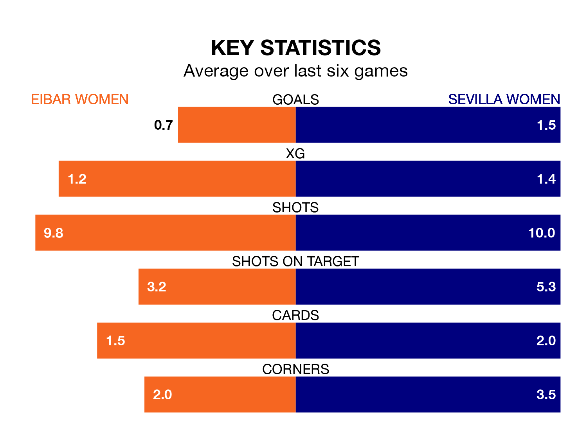

Eibar Women host Sevilla Women on Saturday at Instalaciones de Unbe in Liga F.
In their last league match, on March 30, Eibar drew with Real Betis Women 0-0 away.
Sevilla won, 4-2 at home against Real Sociedad Women, with Antionette Oyedupe Payne, Cristina Martín-Prieto Gutierrez, Eva Llamas Hernández and Olatz Santana (own goal) on the scoresheet.
With 14 goals in 22 games so far this season, Eibar are the league's second-lowest scorers with 0.6 goals per game. And they are conceding more than average, letting in 38 goals at a rate of 1.7 per game.
Sevilla, meanwhile, are above average scorers, with 2.0 goals per game, compared to a league average of 1.5. They have conceded 1.9 goals per game.
In Martín-Prieto Gutierrez, the visitors have one of the league's most on-form strikers so far this season. She has notched 14 goals in 22 appearances, to sit second in the scoring charts.
Her goal rate of one every 137 minutes is quicker than that of Andrea Abigail Alvarez Donis, the home side's top scorer with a goal every 252 minutes, and a total of four goals in 20 games.
Eibar are 13th in the table after 22 games, of which they have won five and drawn five, earning 20 points.
Sevilla are seven places ahead of Eibar in sixth, with 11 wins and three draws putting them on 36 points.
In the last five years, Eibar and Sevilla have played each other on five occasions. Eibar won two of them and Sevilla three.
On average, Eibar scored 1.2 goals and Sevilla 2.4 in those matches.
Their last meeting was on January 28, when Sevilla won 3-0 at home.
The hosts are in mixed form in Liga F, with one win and four draws from their last six games.
With two wins and a draw over that period, Sevilla's form is similar – they have both taken seven points from 18.
Updated: 10:31 (UTC), 31/03/24